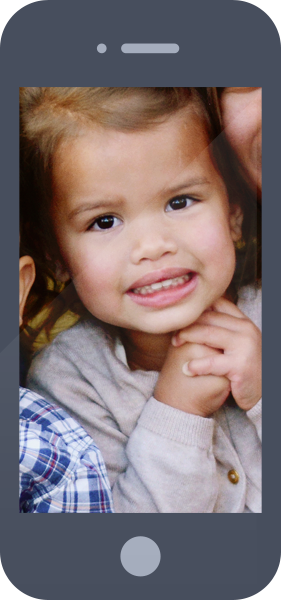
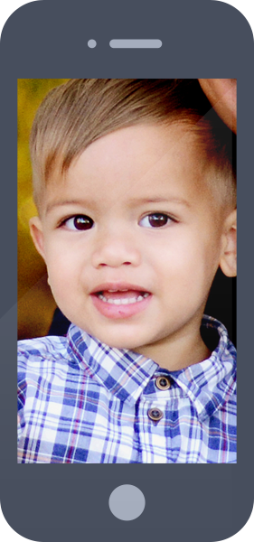

The Family
Meet the Purcell crew. This is what life's really all about. This is my team, my motivation, my inspiration.
Marie
Adelyn
Avery

Christian
Marie
Where do I begin? Marie is my right-hand and my left-hand. What can't she do? Besides being an amazing wife and mother, Marie is my favorite entrepreneur.
She started an online baby girl clothing company called Little Miss Basics and has since sold it. She finds a way to do it all.

Adelyn
The firstborn. Adelyn likes to talk — a lot. Sometimes you will hear her giving orders to Avery and Christian. But she loves to play with her siblings
and makes sure they are taken care of. Adelyn also enjoys to sing and dance. When Adelyn isn't playing, she's singing or dancing — and vice versa.
Avery
Six minutes after Adelyn was born, Avery decided to join us. She enjoys singing loudly and dancing. She is taking a dance class with Marie and learning
the basics of ballet. When she's not singing or dancing, you can find her snitching a cookie from the cookie jar.

Christian
Man of the house. Christian is the one who keeps us in line. He loves his older sisters and always wants to be with them. Christian likes Elmo, grasshoppers,
and balls. Right now, I'm trying to get him to love playing soccer — CT7. Christian also loves to read books, especially ones with animals.